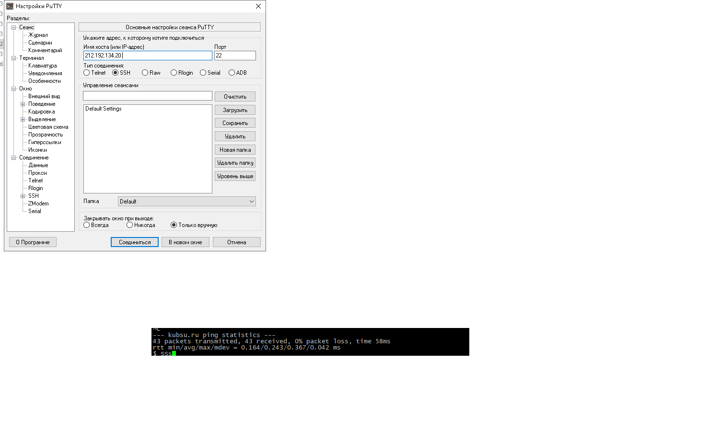
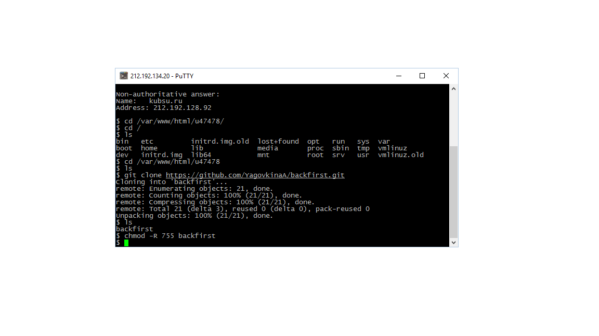
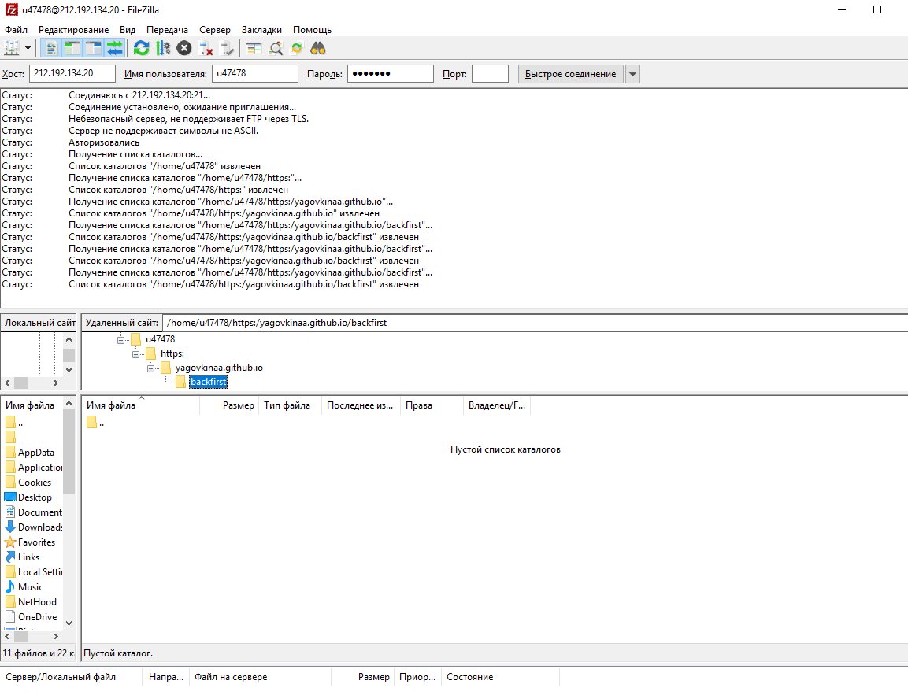

perviy
PuTTY представляет собой приложение,которое является клиентом для различных протоколов ,включая SSH ,TELNET,rlogin. С помомщью него мы подключаемся к учебному серверу по SSH
vtoroy
Вход на сервер

tretiy
Принцип работы команды Ping прост: она посылает серию пакетов маленького размера на указанное устройство.команда Ping непрерывно посылает пакета на хост. Но если нужная информация получена, то необходимо как-то прервать выполнение команды. Для этого просто нужно нажать комбинацию клавиш CTRL+C

4
-nslookup позволяет через командную строку узнать содержимое DNS. С помощью А-записи домен прикрепляется к IP-адресу. Таким образом, А-запись позволяет найти IP. MX-запись это запись на сервере имен (DNS) которая указывает на сервер почты для данного домена.

5
Whois позволяет узнать всю информацию о владельце домена


6
с помощью команд cd и ls создаем папку и с помощью git clone клонируем репозиторий в kubsu-dev.ru. но доступ к файлу может быть запрещен . Пользуемся командой chmod -R 755
7
FileZilla Оснащён возможностью перетаскивания объектов, синхронизацией каталогов и поиском на удалённом сервере. Поддерживает многопоточную загрузку файлов, а также докачку при обрыве (если поддерживается сервером) интернет-соединени
